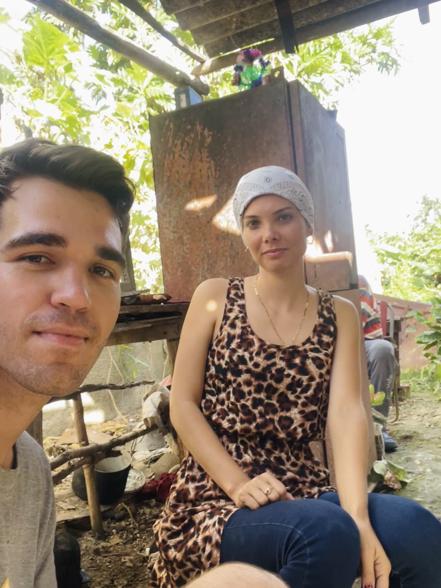
Laura & Marcos
Galería de fotos
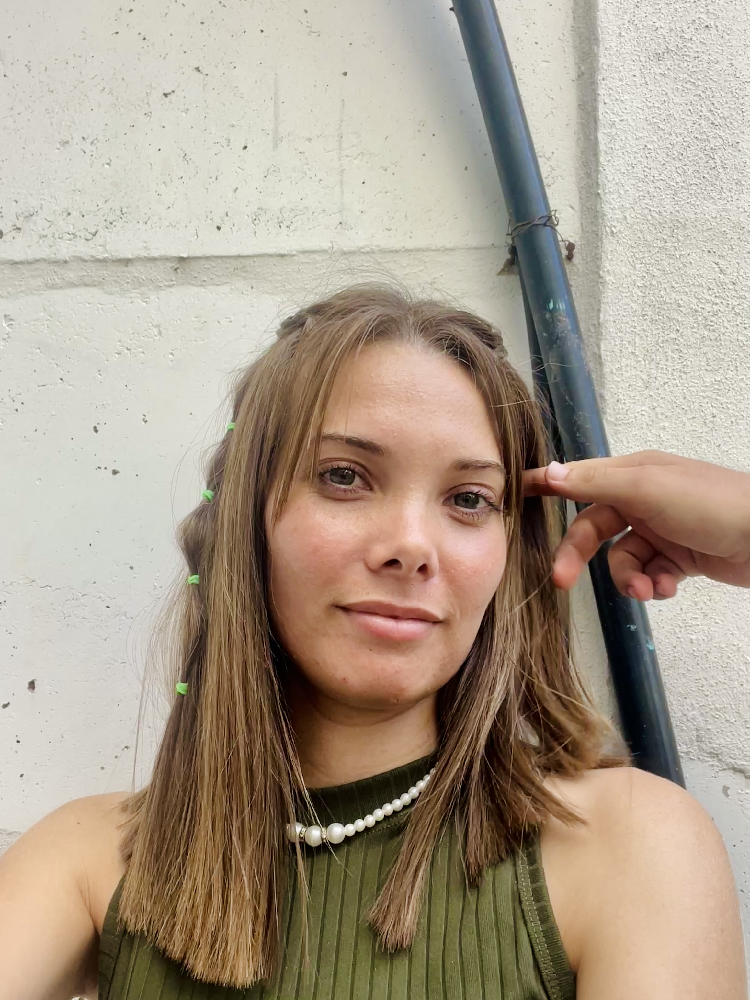
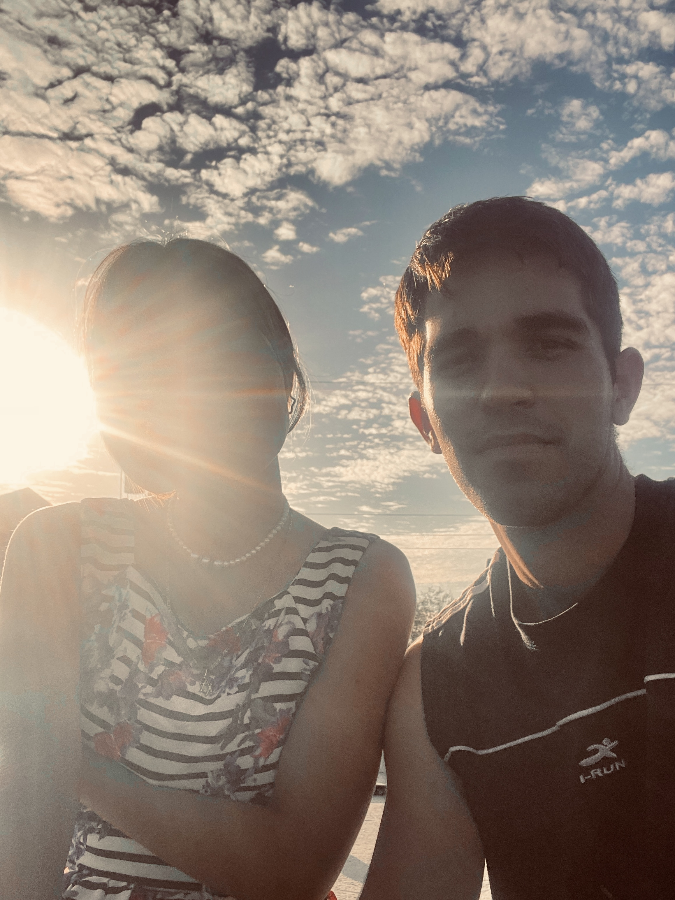
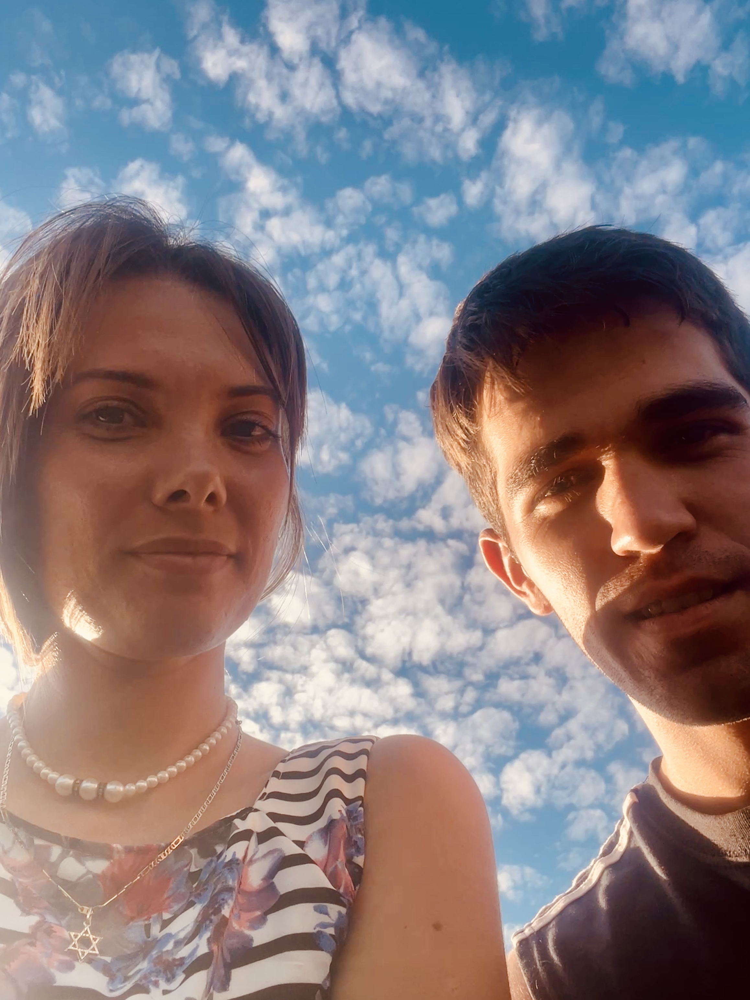
Historia · La guagua
Te conocí en una guagua
La rutina diaria de viajar al trabajo empezaba a gustarme por los minutos que te tenía cerca. Así que los días en que no coincidíamos eran realmente días perdidos. Pocos sospecharían de mis verdaderas motivaciones “laborales”; y mucho menos de la complicidad de Transmetro. Todo estaba en perfecta coordinación para nuestro encuentro. Mi asiento ya tenía tu nombre, y la guagua se encargaba de colocarnos a un “ven para aquí” de distancia (aunque en realidad me buscabas desde que subías). Entonces te desplazabas entre cuerpos apretujados, y, con una sonrisa, me quitabas el lugar y me dejabas varado en aquel montón de gente. Aun así salía ganando: aunque perdía el asiento, obtenía tu sonrisa, algunas miradas, y a veces cuando bajabas me dejabas un beso. Hay que reconocer que, en algún que otro caso, planeábamos el momento, pero, ¿qué sería de nosotros sin esa guagua de Transmetro?
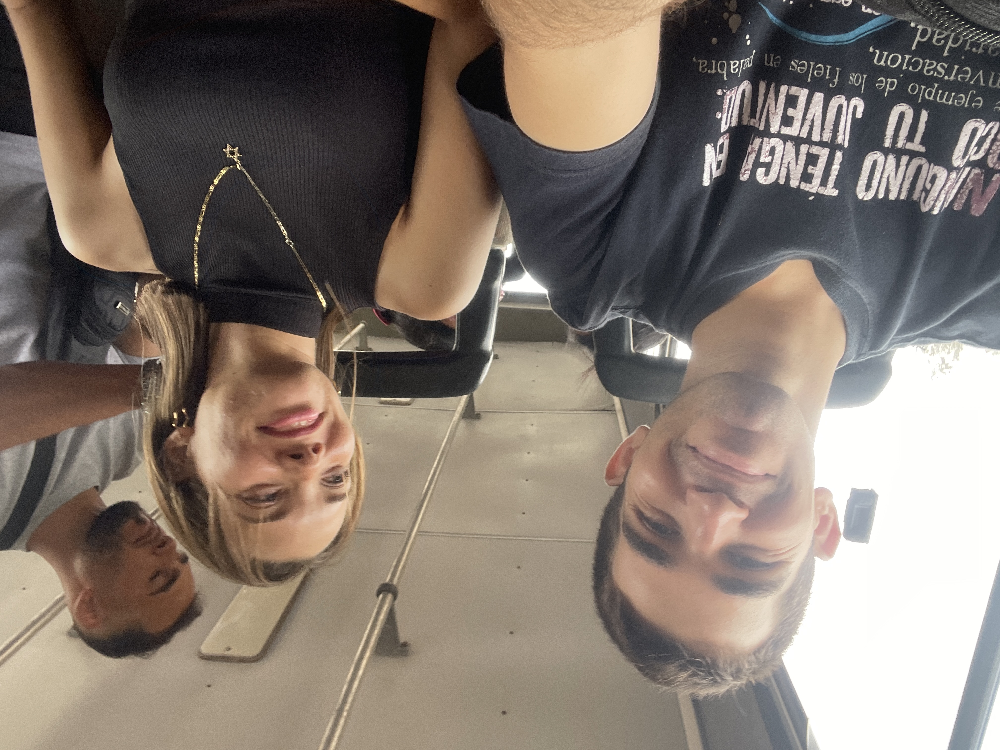
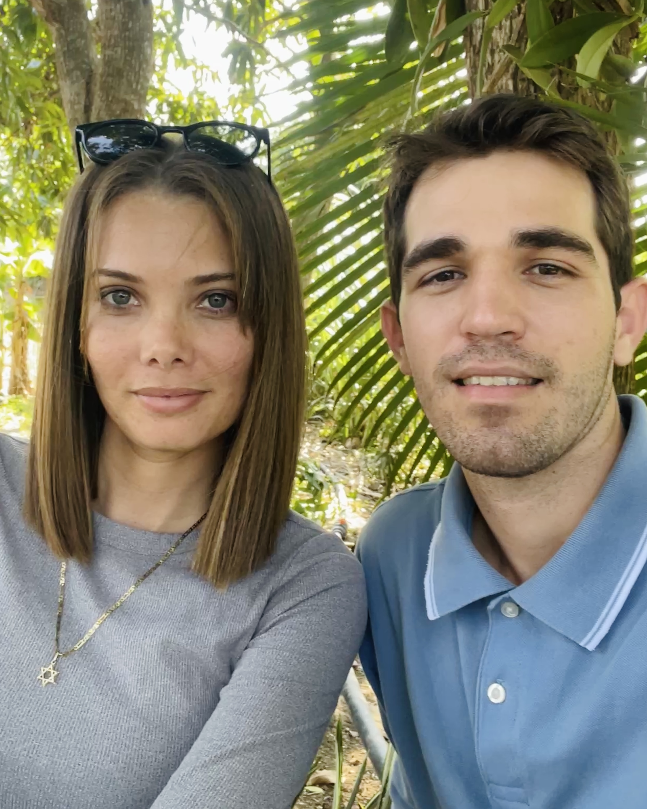
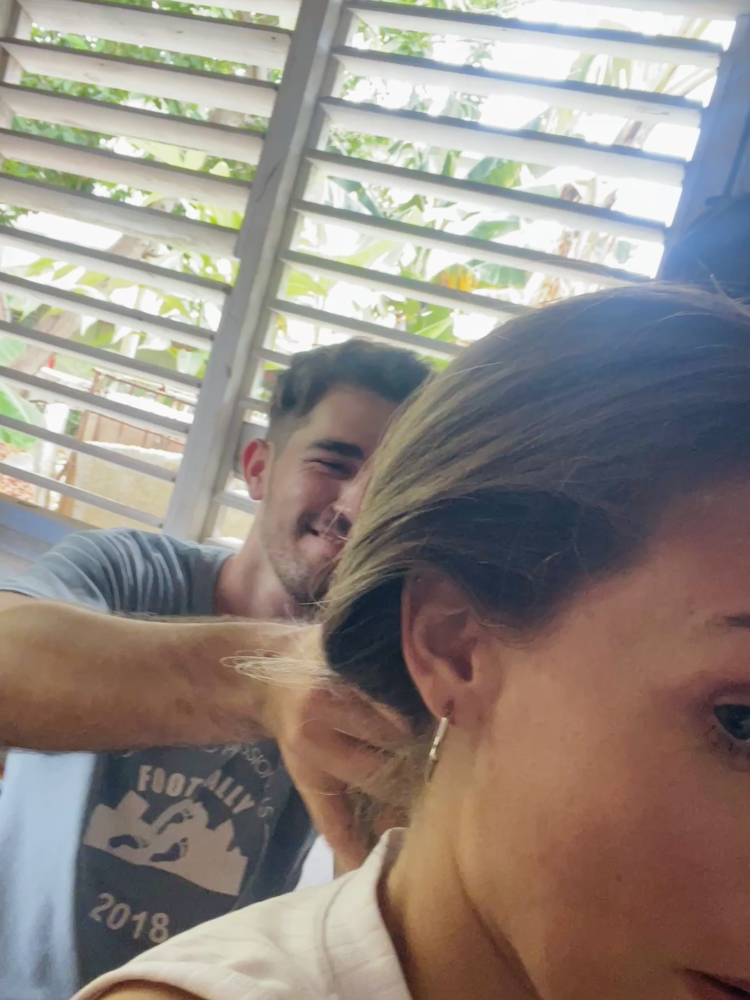

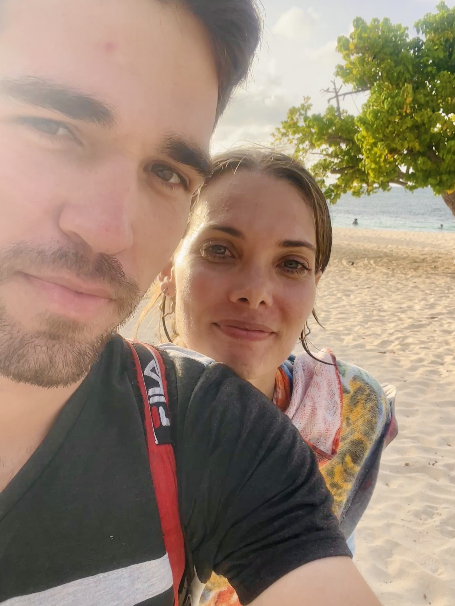
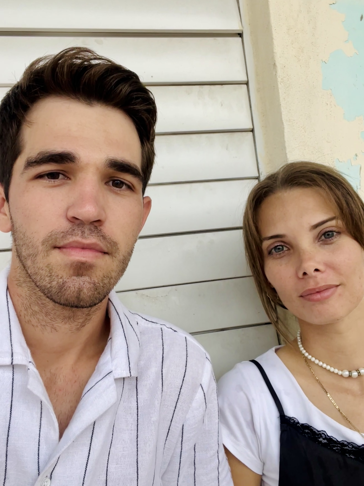
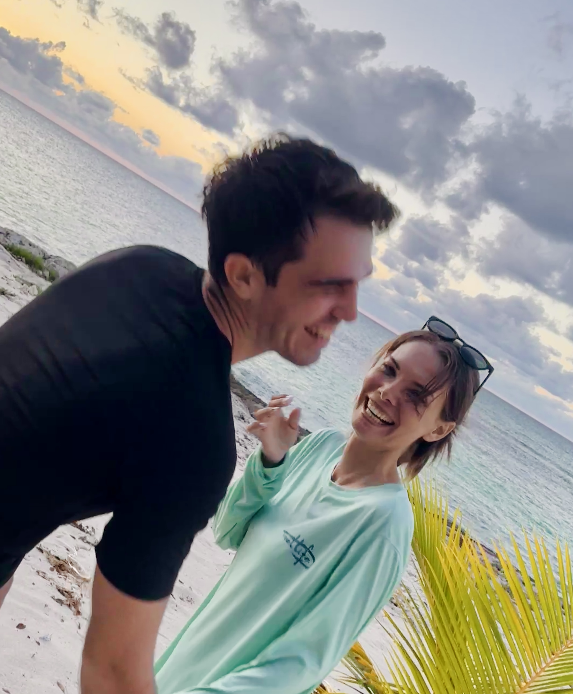


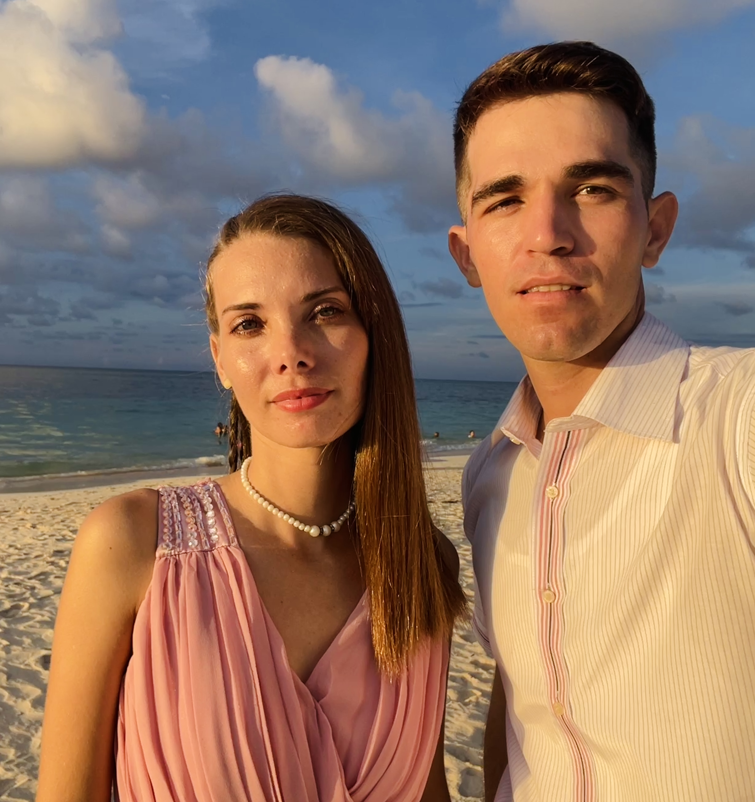
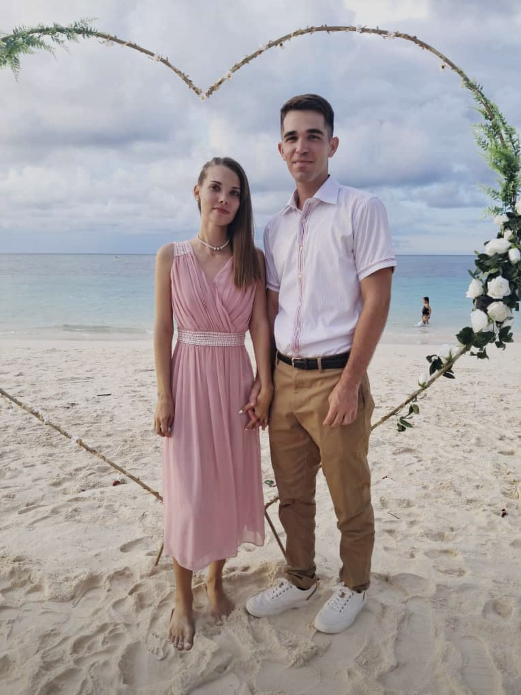
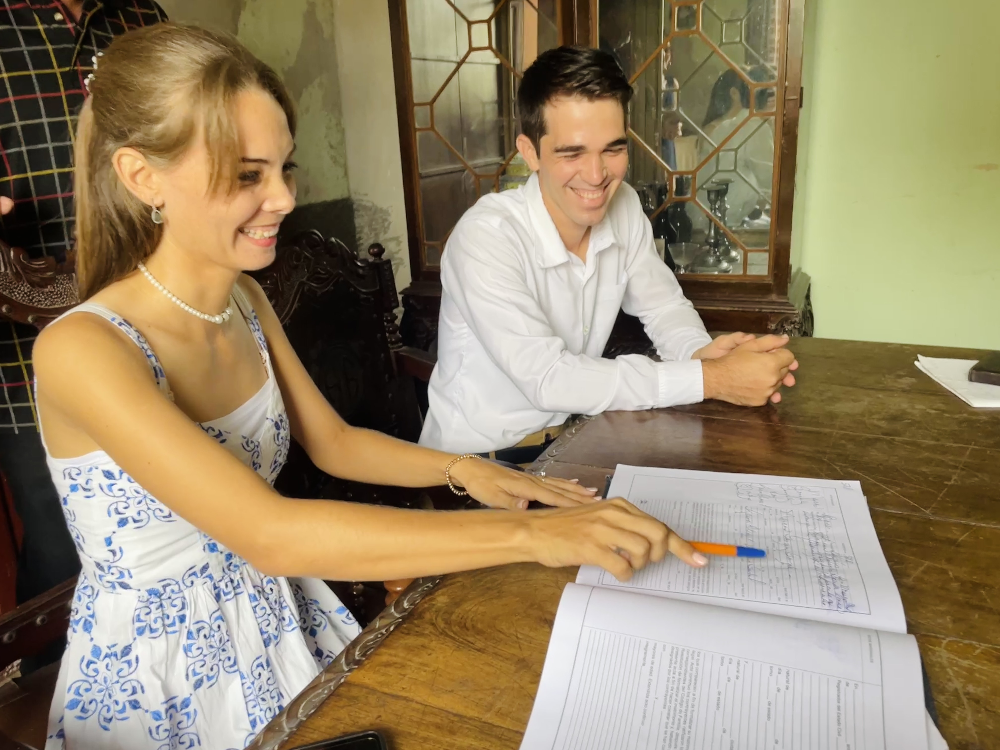